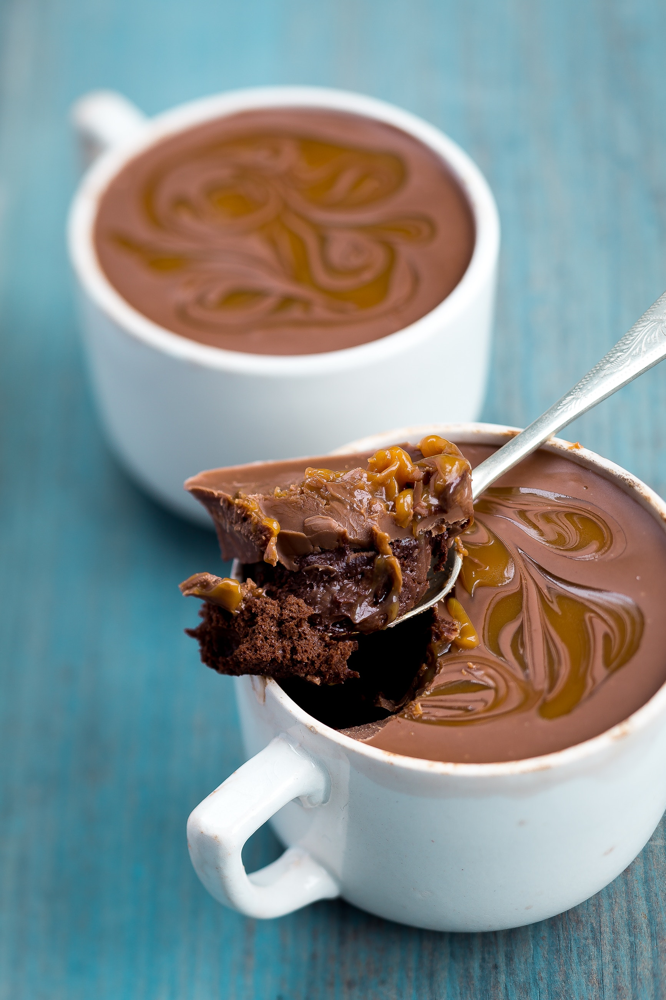

 Ok we can all admit it, as good as healthy food is, often times it just doesn't taste nearly as good as a nice hearty dessert. And let's be honest it doesn't help us deal with stress nearly as well.
That's ok, Ben and Jerry can really be the greatest of therapists, but just like regular therapists there is a cost associated with visiting so don't go and visit every night, or even every other night. This will just lead to bad habits and even worse consequences.
So enjoy your favorite dessert, when appropriate. To celebrate with friends, to reward yourself for accomplishing a goal, or even to eat away the stress from time to time. But the secret is to eat for flavor and not for volume. Savor each bite you take, from a bowl, not the container, we all know how quickly that can go down hill.